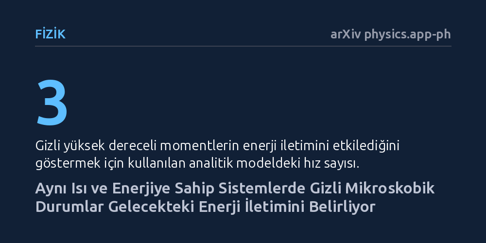

FIZIK · arXiv physics.app-ph · 2026-10-22
Çalışma, parçacık hareketlerinden makroskopik iletim yasalarına geçerken hangi mikroskobik bilgilerin korunması gerektiğini araştırıyor. Geliştirilen öğrenme tabanlı yöntemle, standart modellerin gözden kaçırdığı gizli durumların gelecekteki enerji iletimini doğrudan etkilediği gösterildi.
Sıcaklık ve enerji gibi büyük ölçekli ölçümler birbiriyle tıpatıp aynı olsa bile, mikroskobik ayrıntıların gelecekteki davranışları tamamen değiştirebileceğini gösteriyor.

Günlük hayatta ve mühendislikte sıcaklık, basınç ya da ısı akısı gibi makroskopik değerlere güveniriz. Milyarlarca molekülün tek tek hızını ve konumunu her an takip edemeyeceğimiz için, bu mikro ayrıntıları ortalama değerler altında toplar ve klasik taşıma denklemleriyle ilerleriz. Ancak bu basitleştirme, sistemin gelecekteki evrimini her zaman doğru tahmin etmeye yetmeyebilir.
Fizikte temel soru şudur: Mikroskobik kinetik hareketlerden büyük ölçekli ve bağımsız taşıma yasalarına geçerken hangi bilgileri feda edebilir, hangilerini mutlaka elimizde tutmalıyız? Geleneksel yöntemler genellikle belirli dereceden momentleri matematiksel olarak kesip atarak ilerler; fakat bu yaklaşım, sistemin altında yatan kritik hafıza etkilerini ve görünmeyen kinetik dinamikleri kaçırma riski taşır.
Araştırmacı, geleneksel moment kesme yaklaşımı yerine 'tahmin yeterliliği' ilkesine dayanan yeni bir durum indirgeme çerçevesi geliştirdi. Boltzmann kinetik taşıma dinamiklerinden yola çıkılarak çözülemeyen mikroskobik bilgi, kaçınılmaz tahmin hatası ve sonlu ufuklu gözlemlenebilirlik arasında nicel bir matematiksel bağ kuruldu.
Bu teorik çerçeveyi işletmek için entropi kısıtlı ve doğrusal izdüşümler kullanan bir makine öğrenmesi yaklaşımı kurgulandı. Bu yöntem, eklenmesi gereken tahmin durumlarının fiziksel kimliğini önceden şart koşmadan; bağımsız tepki testleri, durum silme ve dinamik tutarlılık analizleriyle hangi durumların vazgeçilmez olduğunu belirledi. Model, hem analitik olarak tam çözülebilen üç hızlı bir modelde hem de 32 kanallı sentetik bir Boltzmann sistemi üzerinde test edildi.
Analitik olarak çözülebilen üç hızlı modelde çok çarpıcı bir olgu ortaya kondu: Başlangıçtaki toplam enerji ve ısı akısı birbirinin tamamen aynısı olsa bile, yüksek dereceli gizli bir kinetik momentin gelecekteki enerji iletimini doğrudan değiştirdiği kanıtlandı. Yani dışarıdan bakıldığında tamamen özdeş görünen iki sistem, mikroskobik düzeydeki saklı bir yönelim nedeniyle zamanla bambaşka dinamik rotalara girdi.
Sayısal deneyler, standart düşük dereceli momentlerin gözden kaçırdığı bu eksik yönü başarıyla geri kazandı. 32 kanallı sentetik Boltzmann sisteminde öğrenilen temsil; birden fazla kinetik dalı ve gevşeme grubunu kapsayan, klasik yöntemlerin yakalayamadığı kritik durum kombinasyonlarını ortaya çıkardı. Ayrıca sistemin kaç boyutlu bir durum uzayına ihtiyaç duyduğu; gözlem ölçeğine, tahmin süresinin uzunluğuna ve hedeflenen doğruluk payına göre haritalandı.
Bu çalışma, gözlemlenebilir tahmin doğruluğu ile tam bir dinamik kapanma arasındaki farkı net bir biçimde ayrıştırıyor. Çözülemeyen hafıza etkilerinin geride ne kadar bilgi bıraktığını nicelleştirerek, mikro dünyadan makro dünyaya geçerken hangi detayların yaşamsal olduğunu anlamamızı sağlıyor.
Elde edilen sonuçlar; nano ölçekli ısı iletimi, seyreltilmiş gaz akışları ve yarı iletkenlerdeki elektron taşınımı gibi geleneksel iletim yasalarının tıkandığı alanlarda daha tutarlı ve güvenilir modeller inşa etmek için bir yol haritası sunuyor. Mikroskobik dünyayı bütünüyle simüle etmeden ama kritik hafıza izlerini de kaybetmeden geleceği öngörmenin mümkün olduğunu gösteriyor.